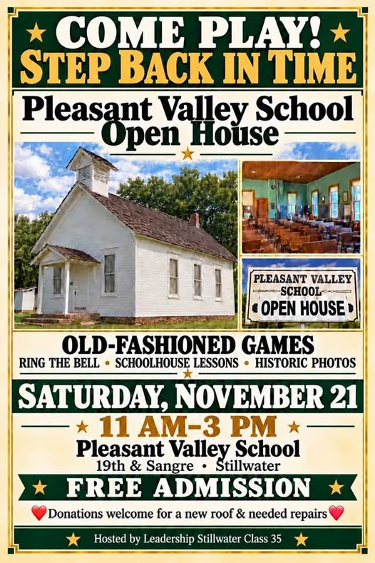

A LIVING HISTORY EXPERIENCE
Visit Our Historic Schoolhouse
Located in Stillwater, Oklahoma, Pleasant Valley School offers a unique opportunity to explore what education was like more than a century ago.
Through historical lessons and hands-on activities, students can experience the traditions of a nineteenth-century classroom.
The schoolhouse is used for educational visits and special community events. Additional information about scheduling visits will be available soon.
FIND US
Our Location
Pleasant Valley School
19th Street & Sangre Road
Stillwater, Oklahoma
COMMUNITY EVENTS
Open House
Join us for a special open house celebrating the history of Pleasant Valley School.
Saturday, November 21, 2026
11:00 AM – 3:00 PM
Free Admission
Enjoy old-fashioned games, schoolhouse lessons, historic photographs, and an opportunity to explore this treasured community landmark.

Donations are welcome to support roof repairs and other preservation needs.
EDUCATIONAL EXPERIENCES
Field Trips & Group Visits
Pleasant Valley School offers a memorable way for students to connect with Oklahoma history.
Visitors can experience traditional lessons, historical classroom activities, and old-fashioned games.
Information about scheduling field trips, meetings, and group visits will be added soon.